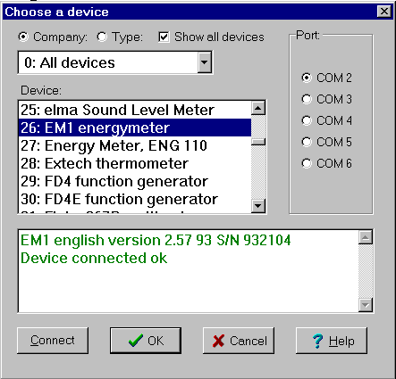
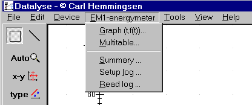
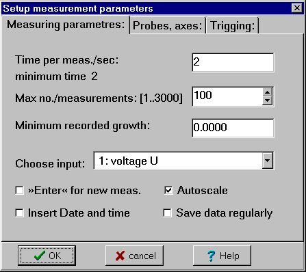
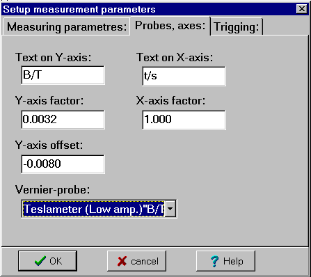

There are more than 100 devices. They can be grouped in two ways: »Company« or »Type«. Company 0 (type 0) gives a list of all devices in alphabetic order. In the ini-file »Datalyse.ini« devices can be enabled (ON) or disabled (OFF).
If you choose þ »Show all devices«, you can also choose devices disabled in datalyse.ini. Datalyse shows all free com-ports. The actual pc has 2 standard com-ports, using irq 3 and 4 and a pci card with 4 serial ports sharing one irq. See also USB
The menu below shows, that the device »EM1 energy meter« is connected correctly.

Notice that Datalyse tests the connection to the device. The message: »EM1 English version 2.57 93 S/N 932104« is send from EM1 energy meter to the pc. The green color symbolizes ok, (a red color symbolizes a missing connection).
Press ok. (You can also double-click on the device). Beneath the menu for EM1 energy meter is merged into the main menu in Datalyse.

Measurements setup (t,f(t)), (Energy Meter parameters).
Time per measurement and number of measurements should be self-explaining.
However, if the time is more than 10 times the minimum time, Datalyse makes 3 measurements (shortly after each other) and uses the mean value of the 3 measurements.

If the minimum recorded growth is positive, measurements will not be »saved« unless the parameter has changed with an amount that is numerically greater than the minimum recorded growth. See also the file »refriger.dat«.
Choose input is visible only if the device has commands for measuring more than one parameter. See also Multitable, where several parameters may be measured at once - in this case to the table.
Check boxes:
If you enable »Enter« for new measurement, the chosen time is not used, but Datalyse will read the clock when you cause a measurement to be made.
X in Auto scale means that Datalyse automatically scales the coordinate system. E.g. the Y-axis is scaled to 0-250 Volt at voltage measuring, but to 0-3 Ampere at current measuring. It is recommended to check this at the first measuring. If the experiment is repeated the setting can be kept by removing this check.
X at Insert Date and time means that YY-MM-DD and hh:mm:ss is inserted in the first two columns of the table. This way it is possible to see when each measurement was made.
X at Save data regularly will have the date saved as it is being measured. Should the PC go down the data measured until that time will not be lost. Datalyse will prompt for a filename.
Probes, axes:

This tab sheet can for instance be used at titration, where the titrand is added with a constant velocity with a pump. In this case it should say V/mL (volume in mL on the x-axis) and the X-factor could for instance be 0.5, if 0.5 mL is added per second.
Scaling of the Y-axis can for instance be used with Vernier-probes. The probes can for instance be:
A manometer from Soldata. The probe gives a voltage from 0 - 4 volt, so it is possible to connect it to a multimeter.
Heart Rate Monitor. This probe requires fast measuring (10-20 measurements per second).
CO2 Gas Sensor, which is useable with any voltmeter.
You can add probes in the file »vernier.ini«.
The format consists of four texts/numbers separated with a quote:
the name of the probe, y-axis unit, factor , offset
The pin connections of the Vernier-probes seen from the front (the wire goes through the back of the screen to the sensor):
Pin position counterclockwise:
Trigging:
Trigging displays the last tabsheet, where the start conditions may be chosen. Measuring may still be activated using the »Start« button in the tool bar.
If you choose a trigging condition, it will be showed in the memo.
Datalyse measures and writes the values in the status line, but the clock does not start until the trigging condition is fulfilled.
Measurements start when:
Trigging is deactivated by »Enter« for new measurement.